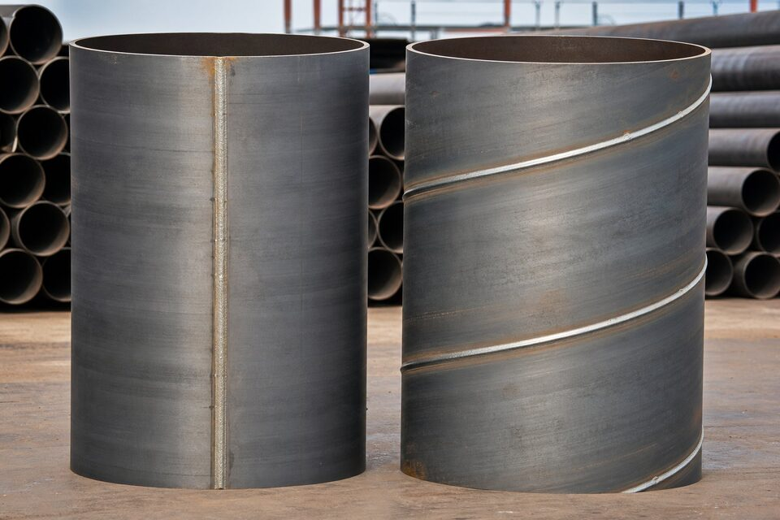

فرآیند ساخت؛ تفاوت بنیادین
در روش درز مستقیم، ورق یا کویل به شکل استوانه فرم داده شده و لبههای آن با جوشکاری مقاومتی یا قوس زیرپودری به هم متصل میشوند؛ درز، خطی مستقیم در طول لوله است. در روش مارپیچ، ورق به صورت نوار مورب پیچیده میشود و درز به شکل حلزونی دور لوله میچرخد. این تفاوت هندسی، پایه تمام تفاوتهای کاربردی بعدی است.

جدول مقایسه جامع
| معیار | درز مستقیم | مارپیچ |
|---|---|---|
| جهت درز | طولی | حلزونی |
| ماده اولیه | کویل یا ورق | ورق (نوار عریض) |
| محدوده سایز | کوچک تا بزرگ | قطرهای متوسط تا بسیار بزرگ |
| طول درز در هر متر | کمتر | بیشتر |
| انعطاف تولید قطر | محدودتر | انعطافپذیرتر در قطرهای بزرگ |
| کاربرد رایج | خطوط فرعی، سازه، سرویس عمومی | انتقال آب، شمع، سایزهای بزرگ |
تحمل فشار و بازرسی
کیفیت درز جوش، تعیینکننده تحمل فشار لوله جوشی است. در خطوط حساس، درز باید با روشهای غیرمخرب به صورت کامل بازرسی شود. روش مارپیچ به دلیل طول بیشتر درز، نیاز به کنترل دقیقتری دارد؛ به همین دلیل برای خطوط اصلی پرفشار معمولاً روشهای درز مستقیم زیرپودری یا بدون درز ترجیح داده میشوند.
اقتصاد ساخت
- روش مارپیچ با تجهیزات کوچکتر، قطرهای بزرگ تولید میکند و در سایزهای خیلی بزرگ اقتصادیتر است.
- روش درز مستقیم در سایزهای کوچک تا متوسط، سرعت و هزینه بهتری دارد.
- در پروژههای با فشار پایین و قطر بزرگ، مارپیچ گزینهای مقرونبهصرفه است.
- برای خطوط اصلی پرفشار، هزینه بازرسی و الزامات را در تحلیل اقتصاد لحاظ کنید.
معیارهای انتخاب
- فشار کاری و حساسیت سرویس را مشخص کنید.
- سایز مورد نیاز را با محدوده هر روش تطبیق دهید.
- الزامات بازرسی پروژه را بررسی کنید.
- اقتصاد کل چرخه شامل بازرسی و ریسک را ارزیابی کنید.
الزامات بازرسی و تست
- بازرسی غیرمخرب کامل درز جوش در خطوط حساس.
- تست هیدرواستاتیک مطابق فرمول استاندارد مربوطه.
- کنترل ابعاد، بیضوی و ضخامت دیواره.
- بازرسی چشمی سطح و پوشش.
- در سفارشهای حساس، الزامات بازرسی را صریح ذکر کنید.
جمعبندی
بین درز مستقیم و مارپیچ، کاربرد و فشار سرویس تصمیمگیرنده است. با ارائه شرایط پروژه، مناسبترین روش ساخت و مدارک بازرسی پیشنهاد میشود.
سوالات رایج
تفاوت اصلی این دو روش چیست؟
جهت درز جوش. در روش درز مستقیم، درز به صورت طولی است و لوله معمولاً از کویل یا ورق شکل میگیرد؛ در روش مارپیچ، ورق به صورت مارپیچ فرم میگیرد و درز به شکل حلزونی دور لوله میپیچد.
کدام روش برای قطرهای بزرگ مناسبتر است؟
روش مارپیچ امکان تولید قطرهای بزرگ با تجهیزات کوچکتر را میدهد و برای سایزهای خیلی بزرگ اقتصادی است؛ روش درز مستقیم زیرپودری نیز در قطرهای بزرگ برای خطوط اصلی استفاده میشود.
آیا درز مارپیچ نقطه ضعف محسوب میشود؟
طول درز در روش مارپیچ بیشتر است و کیفیت آن باید با بازرسی کامل تضمین شود. با کنترل مناسب، این لولهها برای بسیاری از کاربردها قابل قبولاند؛ اما برای خطوط پرفشار اصلی معمولاً روشهای دیگر ترجیح داده میشود.
کاربرد رایج هر کدام چیست؟
درز مستقیم برای خطوط فرعی، سازه و سرویسهای عمومی تا فشار متوسط؛ مارپیچ برای انتقال آب، شمعکوبی و سایزهای بسیار بزرگ با فشار کمتر.
مطالب مرتبط
- راهنمای لوله خط انتقال؛ سطوح مشخصه و گریدها
- راهنمای لولههای جوشی و بازرسی درز جوش
- راهنمای بازرسی درز جوش لولههای جوشی
- مقایسه لوله بدون درز و درزدار
- راهنمای جامع لوله مانیسمان
با ذکر کاربرد، فشار کاری و سایز، مناسبترین روش ساخت (درز مستقیم یا مارپیچ) به همراه مدارک بازرسی پیشنهاد میشود.
مشاهده صفحه محصول ← ثبت RFQ همین محصولتامین این تجهیزات را به پیشرو تجهیز فرتاک بسپارید
شرکت پیشرو تجهیز فرتاک تامینکننده تخصصی تجهیزات صنعتی برای پروژههای نفت، گاز، پتروشیمی، فولاد و نیروگاهی است. برای دریافت پیشنهاد فنی و قیمت، استعلام (RFQ) خود را ثبت کنید تا کارشناسان مهندسی فروش در کوتاهترین زمان پاسخ دهند.
- تامین لوله جوشیلوله درز مستقیم و مارپیچ با مدارک بازرسی
- تامین تجهیزات صنایع نفت و گازپکیج مواد مطابق مدارک پروژه